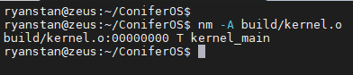
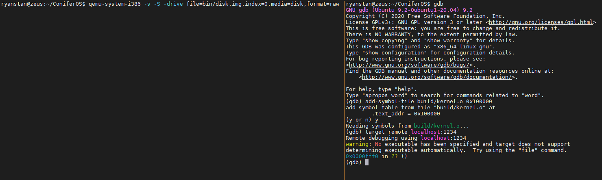

05/09/2021
- Introduction
- A Bare-Bones Bootloader
- GCC Cross-Compiler
- Writing a Linker Script
- Loading Our Kernel into Memory
- Using GDB to Make Sure Things Worked
- Conclusion
- References
Introduction
This post is for anyone that wants to learn more about operating systems and that may even be trying to write their own, as I am.
When I started writing my own OS for x86 (IA-32), I found plenty of online tutorials for how to write my own bootloader (a Google search for "how to write your own bootloader" returns 845,000 results). But I wasn't sure where to go once I had a bootloader that entered protected mode and printed "Hello World" to the screen. What I really wanted to do was take my operating system from a single assembly file to an organized project consisting of C code.
It turns out that making the jump from a bare-bones bootloader to C code isn't too complicated of a process; I'll do my best to show you how I went about doing this. I'll start by giving a quick overview of my initial bootloader and project setup. Next, I'll help you configure a cross-compiler, which will let you compile C code for your generic operating system. Next, we'll write some C code, and use our cross-compiler along with a custom linker script to generate a binary. Finally, we'll write assembly code to load our new binary into memory and start executing it.
A Bare-Bones Bootloader
If you don't already have a simple assembly bootloader, there are a ton of great tutorials online on how to write one. Here's one by Alex Parker (3zanders.co.uk) that I enjoyed. In short, your bootloader should be detectable by the BIOS and should transition the CPU from real mode to protected mode. It's ok if it doesn't do the "loading" part of bootloading yet; I'll show you how to load your kernel into memory later.
Here was the initial structure of my project.

Let's take a look at the Makefile since it shows the tools I'm using to run my project.

The goal is bin/disk.img. This file is used by QEMU as the virtual hard drive raw disk image.
For now, this file is an exact copy of bin/boot.bin which is created when I assemble src/boot/boot.asm.
I'm using NASM which is an assembler for the x86 architecture (it uses Intel syntax as opposed to AT&T).
By passing -f bin to nasm, I'm making sure that the assembler outputs a pure binary file.
The run target uses QEMU to emulate an x86 machine booting up with bin/disk.img
as the virtual hard drive raw disk image.
Later in this post, you may notice that I switch to using qemu-system-i386 instead of qemu-system-x86_64.
The former is targeted for 32-bit x86 architectures while the latter is targeted for 64-bit x86 architectures. While this won't make a difference in this post,
later on you could run into trouble writing 32-bit code while using the 64-bit emulator.
Now let's take a look at src/boot/boot.asm
so you have an idea of what the disk image will initially contain when passed to QEMU. I'd like to preface this code by mentioning that
I used Daniel McCarthy's Operating System course on Udemy as a guide when writing it (which I highly recommend).

I made sure to heavily comment this assembly code so it's easier to understand.
I want to point out that no matter how you write your initial disk image / bootloader (or which tutorial you use), your
disk image must be exactly 512 bytes so that it fits into one sector
and the last two bytes (the boot signature) must be 0x55AA so that the BIOS knows this is a boot sector and can
load it into memory at 0x0000:0x7c00 (segment 0, address 0x7c00) [1].
My bootloader does a few important things:
- Sets the segmentation registers
- Initializes the GDT
- Enables protected mode
- Sets the stack and base pointers
- Enables the A20 line
GCC Cross-Compiler
Unfortunately, we can't just use GCC (as it is) to compile our future C code. To see why this is, go to your terminal and type the command
gcc -dumpmachine.

This command prints the compiler's target platform. In my case, the target is 'x86_64-linux-gnu.' By default, GCC generates
executables for the same platform that it itself was compiled on. This isn't what we want; we need to make sure that GCC generates
executables for a generic target so that it doesn't try using any Linux libraries or headers that we haven't yet implemented for our OS [3].
In the case of my operating system, I'm going to build a compiler with the generic target 'i686-elf.' This is a bare target meant
for freestanding programs on x86 32-bit machines. For some other bare targets and an explanation of target triplets, check out this
OSDev article on target triplets.
Before installing GCC, you'll have to download all the dependencies. Here's a helpful screenshot from another OSDev article on cross-compilers
on building a cross-compiler.
 [2]
[2]
Next, you'll have to download, configure, and build Binutils, another dependency of GCC. Unfortunately,
we can't install Binutils through a package manager since we have to configure all the tools to have the same target platform
as our cross-compiler (i686-elf).
There are three important tools that Binutils provides [4]:
- ld - the GNU linker
- as - the GNU assembler
- ar - a program which can manipulate linker libraries into the target machine's format
- ranlib - generates an inded to the contents of an archive
Now, just copy and paste the following commands from the OSDev Wiki to finish installing. Make sure to replace x, y, and z with the version of Binutils that you downloaded.
--prefix="$PREFIX" \
--with-sysroot --disable-nls --disable-werror
Once Binutils is all set, we can install our GCC cross-compiler. Like before, you'll want to download the source code from https://ftp.gnu.org/gnu/gcc and expand it in your
--prefix="$PREFIX" --disable-nls \
--enable-languages=c,c++ --without-headers
Now that your cross-compiler is installed, just add it to your PATH variable:
You should be able to access your compiler like the following:
 [2]
[2]
Ok, congrats! You successfully built a cross-compiler. Let's jump right in and write some C code next.
C Code
From our boot.asm file, we'll jump to the symbol kernel_main. Thus, for now, let's put together a simple C file that defines this symbol and does some arithmetic.
To reiterate, our goal is to compile this code, add it to our raw disk image, and load it into memory and jump to it from our bootloader. This brings us to an important point. Let's compile and link this file with the default GCC linker script settings and take a look at it. To generate the exectuable, I'll be using the following target that I've added to my Makefile.

Flags is defined as follows. If you're curious about any of the flags I'm passing in, check out the man page for GCC.

This is the output I get when I attempt to make the bin/kernel target.

There are a couple problems with what I just did here and the second warning describes one of these. Since the linker couldn't find the symbol

The --verbose option to our linker shows us the default linker script (which is the one that gcc uses when it calls the linker). By piping this script to grep, we can see the line ENTRY(_start). This is the linker command for defining the first executable instruction in an output file[5]. This works fine for user space programs on Linux, but it won't work in our case since we don't define that symbol.
Let's look at another instruction in the default linker script.

The command OUTPUT_FORMAT instructs ld to format its output. While i386 is the correct target architecture, we don't want our output to be an ELF file. Our operating system doesn't know how to execute ELF files yet, so we want the output of the linker to be a pure binary.
There's one other problem I want to address before we write a new linker script. Let's create a linker script that uses the correct kernel_main symbol as the entry point, but let's leave the output format as an ELF file so we can look at the addresses of the symbols. Our linker script will contain two lines:
ENTRY(kernel_main)
OUTPUT_FORMAT(elf32-i386)
All I'm doing to pass the script to the linker is setting the -T option on GCC and passing in the script's path. Here's the output of the nm tool.

Since our linker script doesn't contain any information on where to place the different output sections in memory (text, data, bss, etc...), it just defaulted to placing our kernel_main symbol at address 0x00. This isn't want we want. Since our bootloader will load our C code into memory at 1 MB, we need our linker to create addresses relative to 1 MB. To fix this, we'll need to write our own linker script.
We'll be loading our C code into memory at 1 MB because this is where the Linux kernel loads it's protected mode code [6].
Writing a Linker Script
If you want to an introduction to linker scripts that is more in depth than I'll be covering here, I recommend "Red Hat Enteprise Linux 3. Using ld, the Gnu Linker". I found chapter 4 was very useful. Especially 4.6 which is on the SECTIONS command.
I already alluded to the first two commands we'll need in our linker script, ENTRY(kernel_main) and OUTPUT_FORMAT(binary). Next, we'll need to use the SECTIONS command to describe the layout of the output file's sections. A section is the smallest unit of an object file that can be relocated (e.g. text, data, bss, etc...) [7]. Thus, the SECTIONS command describes where these units will be placed in the final linked executable.
Here's what our final linker script will look like. I'll walk you through how everything under SECTIONS works.

The special linker variable dot on line 5 contains the current output location counter. This special variable can only be set under SECTIONS and it defaults to 0. Since we want our .text section to start at 1 MB in memory, as this is where our bootloader will put our code, we set the location counter to 1 M. Line 6 defines the output section .text. Line 8 specifies that all .text sections from all input files should be placed into this output section. The location counter automatically increases by the size of the text section. However, since we call ALIGN(4096) on the output section, we ensure that the location counter is moved to an address that is aligned with 4096 bytes. This is the alignment that GCC expects when it compiles code. After this point you'll notice that we don't assign the dot variable again. We're ok with each other section being relatively placed to the text section.
Lastly, I made sure to create an output section .asm for assembly code. This is just an abitrarily named section that will be useful for keeping compiled C code separate from assembly code.
Now that we have an idea of how this linker script works, let's use it to generate an executable. Here is the updated rule I'm using to create the kernel binary with our compiled C code.

Next, we'll want to load this code into memory and execute it. Time to do some more work with our bootloader.
Loading Our Kernel into Memory
Let's update our Makefile and append our kernel binary onto our disk image. To do this, we can
update the bin/disk.img rule.

The command dd can be used to
copy raw data. Here, we're using it to build up our disk image. On line 11, bin/disk.img is created
as an exact copy of bin/boot.bin. This disk image is 512 bytes, or one hard disk sector.
Then on line 12 we append the contents of our kernel code to the second sector of our disk image.
On line 13 we read from /dev/zero which is a special file that provides null characters [8].
The values we've passed to the parameters bs and count make it so that we append 512 bytes of null characters, 100 times,
to our disk image. This is just a fancy way of making our hard disk image larger so it can simulate a real hard disk.
It also ensures that the second sector of our image is completely filled up, that way no errors occur when we copy
the kernel code into memory.
Now it's time to load our kernel from the disk image into memory. As I mentioned earlier,
we'll be loading our kernel at 1 MB, as this is where Linux loads its protected mode kernel code.
We'll be loading and jumping to our kernel from a place in our bootloader
where we're already in protected mode. This makes things a bit tricker because we can't access the
BIOS routines anymore. Specifically, we can't use BIOS interrupt 0x13. This
is the routine for sector-based hard disk reads and writes using
cylinder-head-sector (CHS) addressing [9].
Instead, we'll have to write a driver to communicate with the external hard disks
through the CPU's I/O instructions.
If we look at the man page for
our QEMU emulator,
we'll see that it lists the peripherals it simulates.

Of interest to us is 2 PCI IDE interfaces with hard disk and CD-ROM support.
These are the storage devices that QEMU is emulating. Our raw disk image will be located on hard drive 0.
IDE stands for Integrated Device Electronics, but
it's more commonly known as ATA (Advanced Technology Attachment).
These are standard physical interfaces for connecting storage device like hard drives to the motherboard.
In IDE or ATA devices, the actual hard drive controller is built right into the hard drive. This is the controller
circuit which will enable us to communicate with the hard drive from the CPU.
We can communicate with this controller by using the IO instructions of the CPU [10].
What's the difference between ATA and IDE?
IDE was the name of the original specification. However, as the standard broadened to
include things like CD-ROMS, ATA was standardized. Therefore, all ATA devices conform to the
IDE standard [11].
From Wikipedia:
The first version of what is now called the ATA/ATAPI interface was developed by
Western Digital under the name Integrated Drive Electronics (IDE). --ADD CITATION #10--
The ATA interface defines registers and commands that the disk controller understands so that we can interact with the hard drive. This document describes the registers and commands. We'll be using a few of these commands in our code.
It's also important to be aware of logical block addressing. LBA is defined in the ATA standard and is an improved way of addressing blocks. With CHS addressing, blocks of a disk are referred to by a tuple consisting of a cylinder, a head, and a sector. However, with LBA addressing, each block is referred to by a simple index. This makes things much easier for us (the programmers).
Here's the code I use to interact with the hard disk and to load our kernel into memory. For brevity, I won't describe the code in detail here. Instead, you should check out the comments that I wrote alongside it. Once again, I'll mention that this code is derived from Daniel McCarthy's Operating System course on Udemy, and it is publically available on his Github page.
Check out load_kernel in my bootloader on Github.
Using GDB to Make Sure Things Worked
At this point, things should be working. We need to make sure that this is the case and that our code has entered
the kernel_main function in kernel.c. If we had a print function, we could just print to the terminal from
kernel_main and we would know that things were working. Instead, since this isn't the case, we'll use GDB
remote debugging to step through our code and make sure things are working as expected.
QEMU supports gdb's remote-connection facility via gdbserver.
This allows us to remotely debug the code that QEMU is executing.
I'll walk you through how to do this.
First, we'll want to update our Makefile so that the compilation and linking of kernel.c to kernel.bin
are done in two separate steps. We want
access to kernel.o, the intermediary object file, because GDB can load in the symbol table from this file, which will make debugging easier for us.
This will allow us to set breakpoints in our kernel.c code by referring to symbols like kernel_main.
Here is my additional Makefile rule for build/kernel.o:

Here is my final Makefile.
Next, install Tmux (if you don't already have it) and create split panes (ctrl+b then %). In one pane, run the following command:
qemu-system-i386 -s -S -drive file=bin/disk.img,index=0,media=disk,format=raw
The -s option opens a gdbserver on the QEMU machine at TCP port 1234.
The -S option makes sure that the CPU doesn't start immediately. This allows us to start the CPU from our local gdb session so that we don't miss anything.
Now, in our other pane, run gdb. Here are the first two commands you'll use inside gdb:
add-symbol-file build/kernel.o 0x100000
target remote localhost:1234
The first command adds the symbol table from kernel.o to our debugging session.
The argument 0x100000 is just the memory address at which
the file's text section will be loaded, so 1 MB in our case. The second command connects the gdb session to the gdbserver running inside QEMU.
Here is what your terminal should look like.

Next, set a breakpoint in kernel_main and then run continue. You should hit the breakpoint.
If you do, that means your bootloader correctly loaded your kernel.bin file into memory and jumped to it. Congrats!
Here's a screenshot of me hitting the breakpoint, and then stepping through the code in kernel.c and printing out the local variables.

Conclusion
I was always amazed and confused by the startup stages of the Linux Kernel. How the Kernel goes from pure assembly, to C code, was always a mystery to me.
I had so many questions when I started writing my own operating system. Doesn't compiled C code rely on the Linux Kernel for startup routines and memory management?
How does the linker know where in memory to place certain symbols? Does the OS tell the linker where to put these symbols? If so, how?
These were just some of the questions I had. However, now I realize that things
aren't as complicated as I once thought. In summary, to go from assembly to C code, you must
- compile your C code with a properly configured cross-compiler
- write a linker script that (a) properly aligns your sections with where you C code will be loaded into memory and that (b) outputs a binary file instead of an ELF file
- use the ATA interface to load your code into a fixed point in memory and jump to it from your bootloader
References
- [1] "Boot Sequence," OSDev Wiki, 18 September 2020. [Online]. Available: https://wiki.osdev.org/Boot_Sequence. [Accessed 29 July 2921].
- [2] "GCC Cross-Compiler," OSDev Wiki, 15 February 2021. [Online]. Available: https://wiki.osdev.org/GCC_Cross-Compiler. [Accessed 29 July 2021].
- [3] "Why do I need a Cross Compiler?," OSDev Wiki, 10 December 2019. [Online]. Available: https://wiki.osdev.org/Why_do_I_need_a_Cross_Compiler%3F. [Accessed 29 July 2021].
- [4] "Installing GCC: Building," 28 July 2021. [Online]. Available: https://gcc.gnu.org/install/build.html. [Accessed 2021 July 2021].
- [5] "The Entry Point," The GNU Project, [Online]. Available: https://ftp.gnu.org/old-gnu/Manuals/ld-2.9.1/html_node/ld_24.html. [Accessed 29 July 2021].
- [6] D. P. Bovet and M. Cesati, "System Startup," in Understanding the Linux Kernel, Third Edition, O'Reilly Media, Inc., 2005.
- [7] "Sections - IA-32 Assembly Language Reference Manual," Oracle, [Online]. Available: https://docs.oracle.com/cd/E19455-01/806-3773/elf-3/index.html. [Accessed 2 August 2021].
- [8] "/dev/zero," Wikipedia, 23 April 2021. [Online]. Available: https://en.wikipedia.org/wiki//dev/zero. [Accessed 2 August 2021].
- [9] "INT 13H," Wikipedia, 22 June 2021. [Online]. Available: https://en.wikipedia.org/wiki/INT_13H. [Accessed 2 August 2021].
- [10] "Parallel ATA," Wikipedia, 25 July 2021. [Online]. Available: https://en.wikipedia.org/wiki/Parallel_ATA. [Accessed 2 August 2021].
- [11] "What's the difference between ATA, PATA, and IDE?," Stack Exchange, 30 September 2011. [Online]. Available: https://superuser.com/questions/341452/whats-the-difference-between-ata-pata-and-ide. [Accessed 2 August 2021].